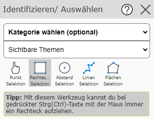
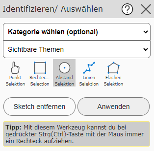
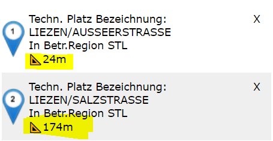

Identify/Select
The Search and Query section already covered how geodata can be queried with the map viewer and how the results should be interpreted and handled. The Standard tool was used there as the query tool, which allows geo-objects to be queried simply by clicking on the map. For certain use cases, however, further query options are needed, which this tool provides.

Note
The difference from querying with the Standard tool is that with this tool, the queried objects are immediately selected (shown with a cyan background).
Another difference from the Standard tool is that here you can select in advance in the selection list
which topic should be queried. If you do not want to commit to a specific topic, you can also
choose the option Visible Topics (all topic layers currently switched on) or All Topics (additionally all
topics that could theoretically be switched on and made visible at the current map scale).
Note
If a map contains a very large number of topic layers, querying across all topics may take a few moments. In addition, in this case, in the event of ambiguity, you must decide on the desired topic in an intermediate step (see the Search and Query section). Querying a specific topic usually returns a result immediately.
The Identify/Select tool offers the following sub-tools:
Point Selection
This allows objects to be queried by simply clicking on the map. Apart from the difference that the queried objects are immediately selected, this tool corresponds to querying with the Standard tool.
Rectangle Selection
This sub-tool is selected by default as soon as the Identify/Select tool is selected from the toolbox.
With this, a rectangular window can be dragged open on the map while holding down the mouse button. The query is applied to all objects located within the window.
Circle Selection
With this sub-tool, a circle can be drawn, within which the query should take place. To do this, you must first click on the map to define the center point of the circle. If you then move the mouse, a preview for the circle is already shown, including the radius value. A further click is needed to set the radius. If the radius is not optimal, the circle can still be changed by another click.
The entire circle can be removed with the Remove Sketch button. If the query circle fits, the query can be carried out with the Apply button:

If a query is done via a circle, there are two special features in the results:
The sorting of the results is done by the distance of the queried object from the center of the circle.
The distance to the center of the circle is shown in the results.
{kind=link}

Line Selection
Here a line can be drawn. Once the line is finished, the query can be started with the Apply button, just as with Circle Selection. All objects that intersect the drawn line are queried here.
Area Selection
The function of this sub-tool corresponds to that of the Line Selection tool. However, an area is drawn here, and the objects under this area are queried.